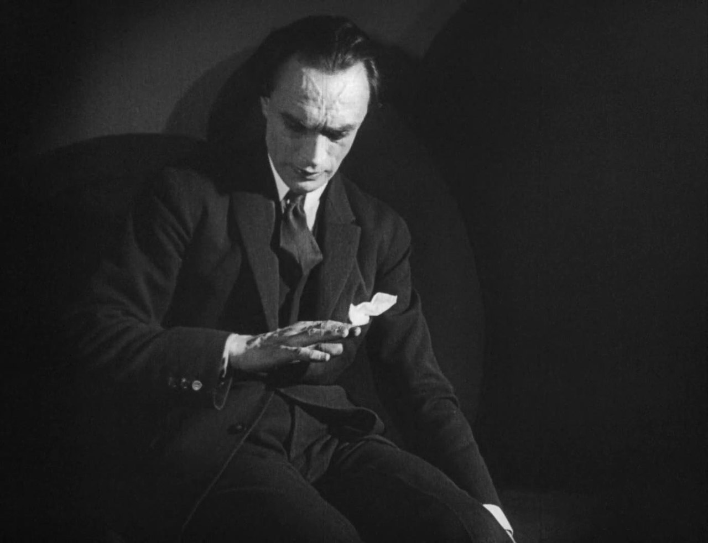

The Hands of Orlac, frame at 49:10
Robert Wiene · 1924 · Silent film, black and white (frame)
The German censors passed the film on 25 September 1924 for adults only. In January 1925 the interior ministry of Saxony asked for it to be cut, on the grounds that its forged fingerprints would help criminals deceive the police. The request was refused after an expert from the Berlin police headquarters called the method shown unrealistic. The film reached the United States in 1928.